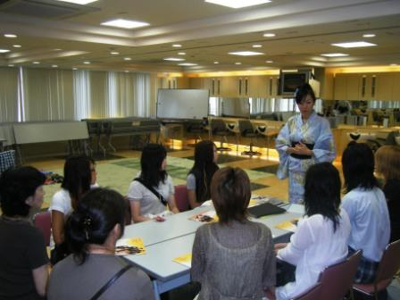
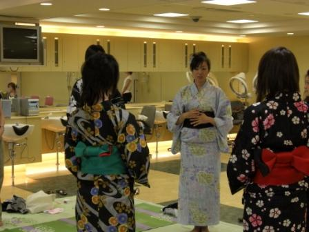
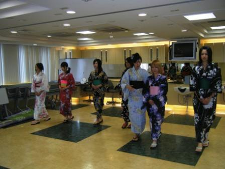
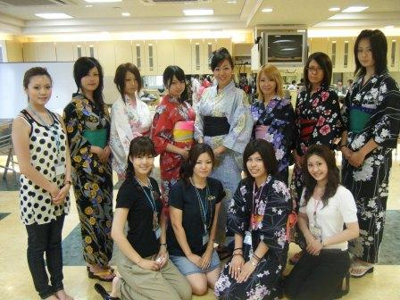

- 2008.07.28
- モデル体験リポートでございます

こんにちは

アイスの食べ過ぎには気をつけましょう 山
下です・・・
山
下です・・・
岐阜県多治見市では３９℃を
記録したというニュース見ました
本格的に夏の到来ですねぇーというよりかは暑すぎ
水分補給はまめにしましょう
さて、７／２６（土）の体験入学にモデルのEICOさんが
本校に来て浴衣着付け＆ウォーキングレッ
スンを行われました
その模様をお届けします
まずはあのＥＩＣＯさんからのお話・・・

いざ、浴衣に着替えて説明が始まりました・・・

ウォーキング高校生
も真剣です

最後はお手伝いしてくれた在校生も混じってパシャリ 皆様決まってます
皆様決まってます

このような貴重な体験できるのは・・・残り１回なんです
それは８月２４日（日）
なんです
この貴重な体験をぜひしにきてください
それとは別に下記のモデルコースの説明会もありますのでそちらもよろしくお願いしまぁーす
モデルコース説明会
日時： ８月９日（土）、８月１９日（火）
(１０：００受付開始） １０：３０ ～ １１：３０
何かわからないことがありましたら遠慮なくご連絡ください
また、ぜひ行きたいので予約したいという
方の連絡ももちろんお待ちしておりまぁーすっ